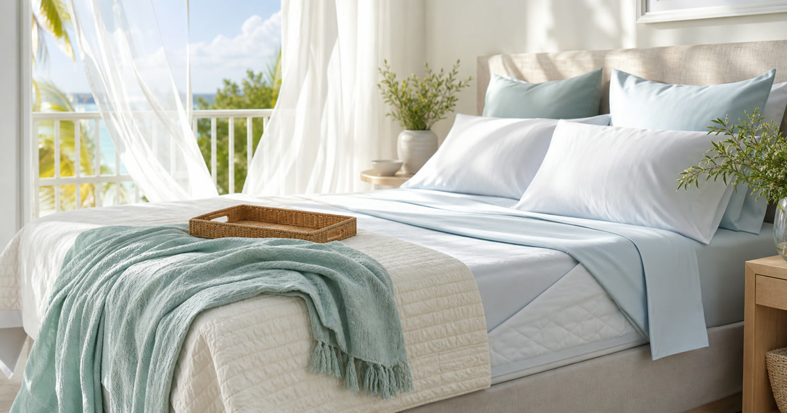

夏季床寢怎麼換：天絲、棉被、保潔墊與涼被的順序
夏季床寢更換要從貼身層開始，再看保潔墊、薄被與冷氣房習慣，不要只因為熱就一次買滿。

夏天換床寢最容易只用一個字決定：涼。但真正睡起來舒服的床，不只看單一材質，而是貼身層、保潔層、覆蓋層和清洗頻率一起成立。台灣夏季有濕氣、冷氣房、午後悶熱和頻繁流汗等情境；若只買一條涼被，卻忽略保潔墊是否悶、床包是否好洗，床仍然不會變得好維持。
第一步先看貼身層
床包、枕套和被套是最常接觸皮膚的層次。材質、清洗方式和更換頻率，比單看觸感形容更重要。
天絲、棉或混紡名稱都要回到商品頁標示，不自行延伸效果。
Elite Fashion 編輯團隊的具體判斷是：夏季床寢先換貼身層，再看保潔墊、薄被與涼被，不要只因為熱就一次買滿所有材質。 這讓 禾肯居家｜北歐風床包被套枕套 中式床罩 保潔墊 IKEA床包、久賴家居｜質感寢具 棉被 天絲床包 涼被 枕頭 網紅推薦 與其他選項能被放回同一個生活問題裡比較，而不是只看單一商品照片。
下單前仍要回商品頁確認規格、尺寸、材質、活動、庫存與配送；若資訊不足，先暫緩，比把不確定的物品帶回家更成熟。
- 先確認使用位置與拿取頻率。
- 再看保存、清潔、線材或收納條件。
- 最後才比較品牌、活動與預算。
保潔墊不是越厚越安心
保潔墊要看床墊尺寸、透氣感、清洗頻率與是否容易移位。若這一層太悶，後面再換涼被也難以補救。
防水、抗菌、涼感等描述請以商品頁與標示為準。
Elite Fashion 編輯團隊的具體判斷是：夏季床寢先換貼身層，再看保潔墊、薄被與涼被，不要只因為熱就一次買滿所有材質。 這讓 禾肯居家｜北歐風床包被套枕套 中式床罩 保潔墊 IKEA床包、久賴家居｜質感寢具 棉被 天絲床包 涼被 枕頭 網紅推薦 與其他選項能被放回同一個生活問題裡比較，而不是只看單一商品照片。
下單前仍要回商品頁確認規格、尺寸、材質、活動、庫存與配送；若資訊不足，先暫緩，比把不確定的物品帶回家更成熟。
- 先確認使用位置與拿取頻率。
- 再看保存、清潔、線材或收納條件。
- 最後才比較品牌、活動與預算。
Elite 嚴選
薄被與涼被要看冷氣習慣
有些人夏天仍需要薄被，有些人只需要涼被或毯。選擇前先看冷氣溫度、是否共睡與半夜是否容易踢被。
不要把材質想像成保證舒適，使用情境才是關鍵。
Elite Fashion 編輯團隊的具體判斷是：夏季床寢先換貼身層，再看保潔墊、薄被與涼被，不要只因為熱就一次買滿所有材質。 這讓 禾肯居家｜北歐風床包被套枕套 中式床罩 保潔墊 IKEA床包、久賴家居｜質感寢具 棉被 天絲床包 涼被 枕頭 網紅推薦 與其他選項能被放回同一個生活問題裡比較，而不是只看單一商品照片。
下單前仍要回商品頁確認規格、尺寸、材質、活動、庫存與配送；若資訊不足，先暫緩，比把不確定的物品帶回家更成熟。
- 先確認使用位置與拿取頻率。
- 再看保存、清潔、線材或收納條件。
- 最後才比較品牌、活動與預算。
常見錯誤：一次換整床但沒有備用組
床寢換新後如果沒有換洗組，清洗週期會變得緊張。與其把預算全放在單一高價品，不如先建立可輪替的兩組邏輯。
尤其潮濕季節，晾乾時間要納入購買數量。
Elite Fashion 編輯團隊的具體判斷是：夏季床寢先換貼身層，再看保潔墊、薄被與涼被，不要只因為熱就一次買滿所有材質。 這讓 禾肯居家｜北歐風床包被套枕套 中式床罩 保潔墊 IKEA床包、久賴家居｜質感寢具 棉被 天絲床包 涼被 枕頭 網紅推薦 與其他選項能被放回同一個生活問題裡比較，而不是只看單一商品照片。
下單前仍要回商品頁確認規格、尺寸、材質、活動、庫存與配送；若資訊不足，先暫緩，比把不確定的物品帶回家更成熟。
- 先確認使用位置與拿取頻率。
- 再看保存、清潔、線材或收納條件。
- 最後才比較品牌、活動與預算。
下單前的四層順序
貼身層、保潔層、覆蓋層、備用層。四層都想清楚，再比較尺寸和材質。
Elite Fashion 編輯團隊的判斷是：夏季床寢的好買點不是追求最涼，而是讓清洗、替換與冷氣房使用都順。
Elite Fashion 編輯團隊的具體判斷是：夏季床寢先換貼身層，再看保潔墊、薄被與涼被，不要只因為熱就一次買滿所有材質。 這讓 禾肯居家｜北歐風床包被套枕套 中式床罩 保潔墊 IKEA床包、久賴家居｜質感寢具 棉被 天絲床包 涼被 枕頭 網紅推薦 與其他選項能被放回同一個生活問題裡比較，而不是只看單一商品照片。
下單前仍要回商品頁確認規格、尺寸、材質、活動、庫存與配送；若資訊不足，先暫緩，比把不確定的物品帶回家更成熟。
- 先確認使用位置與拿取頻率。
- 再看保存、清潔、線材或收納條件。
- 最後才比較品牌、活動與預算。
同主題品牌參考
禾肯居家｜北歐風床包被套枕套 中式床罩 保潔墊 IKEA床包
IKEA床包尺寸、北歐風寢具、保潔墊與換季床寢清單
瀏覽品牌久賴家居｜質感寢具 棉被 天絲床包 涼被 枕頭 網紅推薦
天絲床包比較、涼被怎麼選、換季寢具清單
瀏覽品牌夢露家居｜床包 被套 兩用被 枕頭 床單 床罩 涼被 保潔墊
寢具尺寸怎麼選、保潔墊必要嗎、床包材質比較
瀏覽品牌宜室家居｜床包 被套 兩用被 枕頭 床單 床罩 涼被 保潔墊
換季寢具清單、租屋床包選購、保潔墊比較
瀏覽品牌日創家居｜床包 被套 兩用被 枕頭 床單 床罩 保潔墊 涼被
床包尺寸對照、涼被推薦、保潔墊選購
瀏覽品牌BETENSH 床墊 | 官方旗艦店
床墊怎麼選、租屋床墊升級、睡眠品質改善清單
瀏覽品牌FAQ
夏季床寢先買涼被嗎？
不一定。建議先看床包和保潔墊，因為它們更貼近身體且影響清洗頻率。
保潔墊會不會太悶？
需看材質、厚度與商品標示，不能只看名稱判斷。
床寢需要準備幾組？
通常至少要考慮換洗輪替，但實際數量要看洗衣頻率和晾乾條件。
下一步建議
夏季床寢更換要先看貼身觸感、保潔墊清洗頻率、薄被厚度與冷氣房習慣，再比較床寢品牌。 先用本文順序縮小範圍，再回商品頁確認規格、價格、活動與庫存。
重要警語
本文含品牌／商品導購連結；商品資訊、價格、規格、活動與庫存請以商品頁公告為準。天絲、棉被、保潔墊與涼被不作降溫、抗敏、健康或療效承諾；材質、尺寸、清洗與使用限制請以商品頁及包裝為準。
本文含品牌／商品導購連結；若你透過部分商品連結前往選購，Elite Fashion 可能取得合作收益。本文仍以編輯判斷與使用情境整理為主，價格、規格、活動與庫存請以商品頁公告為準。